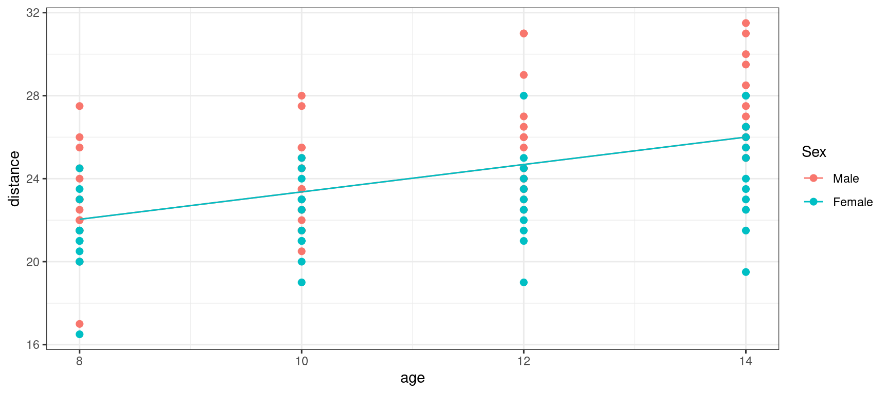
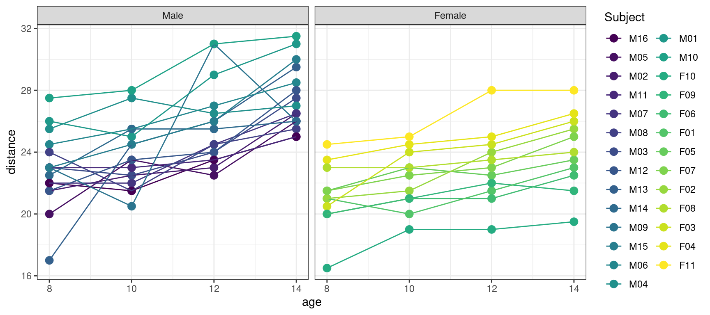

library(tidyverse)
library(lattice)
library(lme4)
library(nlme)
theme_set(theme_bw())Linear Mixed Effects Models
Lecture Notes
Preliminary
Only functions from R-base and stats (preloaded) are required plus packages from the tidyverse for data representation and manipulation. The package lme4 and nlme are used for adjusting mixed models. lattice gives additional tools for plotting output of linear mixed-effect models.
1 Introduction: the orthodont data
The Orthodont data has 108 rows and 4 columns of the change in an orthodontic measurement over time for 27 young subjects. Here, distance is a numeric vector of distances from the pituitary to the pterygomaxillary fissure (mm). These distances are measured on x-ray images of the skull.

data("Orthodont", package = "nlme")
Orthodont %>% rmarkdown::paged_table()Let us plot the data, i.e. the distance versus age.
Show the code
orthodont_plot <- Orthodont %>%
ggplot() + aes(x = age, y = distance, color = Sex) + geom_point(size = 2)
orthodont_plot
A linear model by definition assumes there is a linear relationship between the observations (y_j, 1\leq j \leq n) and m series of variables (x_{j}^{(1)}, \ldots , x_{j}^{(p)} ,1\leq j \leq n):
y_j = c_0 + c_1 x_{j}^{(1)} + c_2 x_{j}^{(2)} + \cdots + c_m x_{j}^{(m)} + \varepsilon_j , \quad \quad 1\leq j \leq n , where (\varepsilon_j, 1\leq j \leq n) is a sequence of residual errors.
In our example, the observations (y_j, 1\leq j \leq n) are the n=108 measured distances.
We can start by fitting a linear model to these data using age as a regression variable:
\text{linear model 1:} \quad \quad y_j = c_0 + c_1 \times{\rm age}_j + \varepsilon_j
lm1 <- lm(distance~age, data=Orthodont)
summary(lm1)
Call:
lm(formula = distance ~ age, data = Orthodont)
Residuals:
Min 1Q Median 3Q Max
-6.5037 -1.5778 -0.1833 1.3519 6.3167
Coefficients:
Estimate Std. Error t value Pr(>|t|)
(Intercept) 16.7611 1.2256 13.676 < 2e-16 ***
age 0.6602 0.1092 6.047 2.25e-08 ***
---
Signif. codes: 0 '***' 0.001 '**' 0.01 '*' 0.05 '.' 0.1 ' ' 1
Residual standard error: 2.537 on 106 degrees of freedom
Multiple R-squared: 0.2565, Adjusted R-squared: 0.2495
F-statistic: 36.56 on 1 and 106 DF, p-value: 2.248e-08Let us plot the predicted distance \hat{a}_0 + \hat{a}_1 \times {\rm age} together with the observed distances
Show the code
orthodont_plot + geom_line(aes(x = age, y = predict(lm1))) + theme_bw()
If we now display explicitly the boys and girls, we see that we are missing something: we underestimate the distance for the boys and overestimate it for the girls.
Show the code
orthodont_plot + geom_line(aes(x = age, y = predict(lm1))) + facet_grid( ~ Sex ) + theme_bw()We can then assume the same slope but different intercepts for boys and girls,
\text{linear model 2:} \quad \quad y_j = c_0 + \delta_{0F}\times \mathbf{1}_{{\rm Sex}_j={\rm F}} + c_1 \times{\rm age}_j + \varepsilon_j
Here, c_{0}=c_{0M} is the intercept for the boys and c_0 + \delta_{0F}=c_{0F} the intercept for the girls.
lm2 <- lm(distance~age+Sex, data=Orthodont)
summary(lm2)
Call:
lm(formula = distance ~ age + Sex, data = Orthodont)
Residuals:
Min 1Q Median 3Q Max
-5.9882 -1.4882 -0.0586 1.1916 5.3711
Coefficients:
Estimate Std. Error t value Pr(>|t|)
(Intercept) 17.70671 1.11221 15.920 < 2e-16 ***
age 0.66019 0.09776 6.753 8.25e-10 ***
SexFemale -2.32102 0.44489 -5.217 9.20e-07 ***
---
Signif. codes: 0 '***' 0.001 '**' 0.01 '*' 0.05 '.' 0.1 ' ' 1
Residual standard error: 2.272 on 105 degrees of freedom
Multiple R-squared: 0.4095, Adjusted R-squared: 0.3983
F-statistic: 36.41 on 2 and 105 DF, p-value: 9.726e-13Orthodont$pred_lm2 <- predict(lm2)Show the code
orthodont_plot +
geom_line(aes(x = age, y = predict(lm2))) + theme_bw()We could instead assume the same intercept but different slopes for boys and girls:
\text{linear model 3:} \quad \quad y_j = c_0 + c_{1M} \times{\rm age}_j \times \mathbf{1}_{{\rm Sex}_j={\rm M}} + c_{1F}\times{\rm age}_j\times \mathbf{1}_{{\rm Sex}_j={\rm F}} + \varepsilon_j Here, c_{1M} is the slope for the boys and c_{1F} the slope for the girls.
lm3 <- lm(distance~age:Sex , data=Orthodont)
summary(lm3)
Call:
lm(formula = distance ~ age:Sex, data = Orthodont)
Residuals:
Min 1Q Median 3Q Max
-5.7424 -1.2424 -0.1893 1.2681 5.2669
Coefficients:
Estimate Std. Error t value Pr(>|t|)
(Intercept) 16.76111 1.08613 15.432 < 2e-16 ***
age:SexMale 0.74767 0.09807 7.624 1.16e-11 ***
age:SexFemale 0.53294 0.09951 5.355 5.07e-07 ***
---
Signif. codes: 0 '***' 0.001 '**' 0.01 '*' 0.05 '.' 0.1 ' ' 1
Residual standard error: 2.249 on 105 degrees of freedom
Multiple R-squared: 0.4215, Adjusted R-squared: 0.4105
F-statistic: 38.26 on 2 and 105 DF, p-value: 3.31e-13Orthodont$pred_lm3 <- predict(lm3)Show the code
orthodont_plot + geom_line(aes(x = age, y = predict(lm3))) + theme_bw()
We can also combine these two models by assuming different intercepts and different slopes:
\text{linear model 4:} \quad \quad y_j = c_0 + \delta_{0F}\times \mathbf{1}_{{\rm Sex}_j={\rm F}} + c_{1M} \times{\rm age}_j \times \mathbf{1}_{{\rm Sex}_j={\rm M}} + c_{1F}\times{\rm age}_j\times \mathbf{1}_{{\rm Sex}_j={\rm F}} + \varepsilon_j
lm4 <- lm(distance ~ age:Sex + Sex, data = Orthodont)
summary(lm4)
Call:
lm(formula = distance ~ age:Sex + Sex, data = Orthodont)
Residuals:
Min 1Q Median 3Q Max
-5.6156 -1.3219 -0.1682 1.3299 5.2469
Coefficients:
Estimate Std. Error t value Pr(>|t|)
(Intercept) 16.3406 1.4162 11.538 < 2e-16 ***
SexFemale 1.0321 2.2188 0.465 0.64279
age:SexMale 0.7844 0.1262 6.217 1.07e-08 ***
age:SexFemale 0.4795 0.1522 3.152 0.00212 **
---
Signif. codes: 0 '***' 0.001 '**' 0.01 '*' 0.05 '.' 0.1 ' ' 1
Residual standard error: 2.257 on 104 degrees of freedom
Multiple R-squared: 0.4227, Adjusted R-squared: 0.4061
F-statistic: 25.39 on 3 and 104 DF, p-value: 2.108e-12Orthodont$pred_lm4 <- predict(lm4)Show the code
orthodont_plot + geom_line(aes(x = age, y = predict(lm4))) + theme_bw()Different criteria for model selection, including BIC, seem to prefer lm3.
BIC(lm1, lm2, lm3, lm4) df BIC
lm1 3 519.6234
lm2 4 499.4121
lm3 4 497.1948
lm4 5 501.6524Should we then consider that lm3 is our final model?
Let us look at the individual fits for 8 subjects,
Show the code
selected <- c(paste0("M0",5:8),paste0("F0",2:5))
Orthodont_selected <- filter(Orthodont, Subject %in% selected)
Orthodont_selected %>%
ggplot() + geom_point(aes(x = age,y = distance), color="red", size=3) +
geom_line(aes(x = age, y = predict(lm3, newdata=Orthodont_selected))) + facet_wrap(~Subject, nrow=2) 
We see that the model for the boys, respectively for the girls, seems to underestimate or overestimate the individual data of the four boys, respectively the four girls.
Indeed, we didnt take into account the fact that the data are repeated measurements made on the same subjects. A more convenient plot for this type of data consists in joining the data of a same individual:
Show the code
ggplot(data = Orthodont) +
geom_point(aes(x = age, y = distance, color = Subject), size = 3) +
geom_line(aes(x = age, y = distance, color = Subject)) + facet_grid(~Sex)We see on this plot, that even if the distance seems to increase linearly for each individual, the intercept and the slope may change from a subject to another one, including within the same Sex group.
We therefore need to extend our linear model in order to take into account this inter-individual variability.
2 Mathematical definition of a linear mixed effects models
The linear model introduced above concerns a single individual. Suppose now that a study is based on N individuals and that we seek to build a global model for all the collected observations for the N individuals. We will denote y_{ij} the jth observation taken of individual i and x_{ij}^{(1)}, \ldots , x_{ij}^{(m)} the values of the m explanatory variables for individual i. If we assume that the parameters of the model can vary from one individual to another, then for any subject i, 1\leq i \leq N, the linear model becomes
y_{ij} = c_{i0}^{\ } + c_{i1}^{\ } x_{ij}^{(1)} + c_{i2}^{\ } x_{ij}^{(2)} + \cdots + c_{im}^{\ } x_{ij}^{(m)} + \varepsilon_{ij}, \quad 1\leq j \leq n_i.
Suppose to begin with that each individual parameter c_{ik} can be additively broken down into a fixed component \beta_k and an individual component \eta_{ik}, i.e.,
c_{ik} = \beta_k + \eta_{ik}
where \eta_{ik} represents the deviation of c_{ik} from the typical value \beta_k in the population for individual i, with \eta_{ik} a normally distributed random variable with mean 0.
Using this parametrization, the model becomes
y_{ij} = \beta_{0}^{\ } + \beta_{1}^{\ } x_{ij}^{(1)} + \cdots + \beta_{m}^{\ } x_{ij}^{(m)} + \eta_{i0}^{\ } + \eta_{i1}^{\ } x_{ij}^{(1)} + \ldots + \eta_{im}^{\ } x_{ij}^{(m)} + \varepsilon_{ij}.
We can then rewrite the model in matrix form:
y_i = X_i \, \beta + X_i \, \eta_i + \varepsilon_i ,
where
y_i = \left( \begin{array}{c} y_{i1} \\ y_{i2} \\ \vdots \\ y_{in_i} \end{array}\right) \quad ,\quad X_i = \left( \begin{array}{cccc} 1 & x_{i1}^{(1)} & \cdots & x_{i1}^{(m)} \\ 1 & x_{i2}^{(1)} & \cdots & x_{i2}^{(m)} \\ \vdots & \vdots & \ddots & \vdots \\ 1 & x_{in}^{(1)} & \cdots & x_{in}^{(m)} \end{array}\right) \quad , \quad \beta = \left( \begin{array}{c} \beta_0 \\ \beta_1 \\ \vdots \\ \beta_{m} \end{array}\right) \quad , \quad \eta_i = \left( \begin{array}{c} \eta_{i0} \\ \eta_{i1} \\ \vdots \\ \eta_{im} \end{array}\right) \quad , \quad \varepsilon_i = \left( \begin{array}{c} \varepsilon_{i1} \\ \varepsilon_{i2} \\ \vdots \\ \varepsilon_{in} \end{array}\right)
Here, y_i is the n_i vector of observations for individual i, X_i is the n_i \times d design matrix (with d = m+1), \beta is a p-vector of fixed effects (i.e. common to all individuals of the population), \eta_i is a p-vector of random effects (i.e. specific to each individual) and \varepsilon_i is a n_i-vector of residual errors.
The model is called linear mixed effects model because it is a linear combination of fixed and random effects.
The random effects are assumed to be normally distributed in a linear mixed effects model:
\eta_i \sim^{\mathrm{iid}} \mathcal{N}(0_p \ , \ \Omega)
\Omega is the d\times d variance-covariance matrix of the random effects. This matrix is diagonal if the components of \eta_i are independent.
The vector of residual errors \varepsilon_i is also normally distributed:
\varepsilon_i \sim^{\mathrm{iid}} \mathcal{N}(0_{n_i} \ , \ \Sigma_i)
The particular case of a diagonal matrix with constant diagonal terms, i.e. \Sigma_i = \sigma^2 \, I_{n_i}, means that, for any individual i, the residual errors (\varepsilon_{ij}, 1 \leq j \leq n_i) are independent and identically distributed:
\varepsilon_{ij} \sim^{\mathrm{iid}} \mathcal{N}(0, \sigma^2)
We can extend this model to models invoking more complicated design matrices that may even differ for fixed and random effects:
y_i = X_i \, \beta + A_i \, \eta_i + \varepsilon_i
As an example, consider the following model
\begin{aligned} y_{ij}& = c_{i0}^{\ } + c_{i1}^{\ } x_{ij}^{(1)} + c_{i2}^{\ } x_{ij}^{(2)} + \varepsilon_{ij} \\ & = \beta_{0}^{\ } + \beta_{1}^{\ } x_{ij}^{(1)} + \beta_{2}^{\ } x_{ij}^{(2)} + \eta_{i0}^{\ } + \eta_{i1}^{\ } x_{ij}^{(1)} + \eta_{i2}^{\ } x_{ij}^{(2)} + \varepsilon_{ij} \end{aligned}
The variance covariance matrix \Omega of the vector of random effects (\eta_{i0},\eta_{i1},\eta_{i2}) is a 3\times3 matrix.
Assume now that parameter c_{i2} does not vary from one individual to another. Then c_{i2} = \beta_2 for all i which means that \eta_{i2}=0 for all i. A null variance for \eta_{i2} means that \Omega_{33}, the third diagonal term of \Omega is 0.
Instead of considering a variance-covariance matrix \Omega with null diagonal terms, it is more convenient to rewrite the model a follows
y_{ij} = \beta_{0}^{\ } + \beta_{1}^{\ } x_{ij}^{(1)} + \beta_{2}^{\ } x_{ij}^{(2)} + \eta_{i0}^{\ } + \eta_{i1}^{\ } x_{ij}^{(1)} + \varepsilon_{ij} \quad , \quad 1 \leq j \leq n_i or, in a matricial form, as
\left( \begin{array}{c} y_{i1} \\ y_{i2} \\ \vdots \\ y_{in_i} \end{array}\right) = \left( \begin{array}{ccc} 1 & x_{i1}^{(1)} & x_{i1}^{(2)} \\ 1 & x_{i2}^{(1)} & x_{i2}^{(m)} \\ \vdots & \vdots & \vdots \\ 1 & x_{in}^{(1)} & x_{in}^{(m)} \end{array}\right) \left( \begin{array}{c} \beta_0 \\ \beta_1 \\ \beta_{2} \end{array}\right) + \left( \begin{array}{cc} 1 & x_{i1}^{(1)} \\ 1 & x_{i2}^{(1)} \\ \vdots & \vdots \\ 1 & x_{in}^{(1)} \end{array}\right) \left( \begin{array}{c} \eta_{i0} \\ \eta_{i1} \end{array}\right) + \left( \begin{array}{c} \varepsilon_{i1} \\ \varepsilon_{i2} \\ \vdots \\ \varepsilon_{in} \end{array}\right)
\Omega is now the 2\times 2 variance-covariance matrix of (\eta_{i0},\eta_{i1})^\top.
3 Statistical inference in linear mixed effects models
3.1 Estimation of the population parameters
The model parameters are the vector of fixed effects \beta, the variance-covariance matrix \Omega of the random effects and the variance \sigma^2 of the residual errors (assuming i.i.d. residual errors).
Let \theta = (\beta,\Omega,\sigma^2) be the set of model parameters.
We easily deduce from the matricial representation of the model y_i = X_i \, \beta + A_i \, \eta_i + \varepsilon_i, that y_i is normally distributed:
y_i \sim \mathcal{N}\bigg(X_i \beta \ , \ A_i \Omega A_i^\top + \sigma^2 I_{n_i}\bigg)
Let y = (y_i, 1\leq i \leq N) be the set of observations for the N individuals. The maximum likelihood (ML) estimator of \theta maximizes the log-likelihood function defined as
\begin{aligned} \log\ell(\theta) & = \log(\mathbb{P}(y \ ; \ \theta)) = \sum_{i=1}^{N}\log(\mathbb{P}(y_i \ ; \ \theta))\\ & = \sum_{i=1}^{N} \left\{ -\frac{n_i}{2}\log(2\pi) - \frac{1}{2}\log(|A_i \Omega A_i^\top + \sigma^2 I_{n_i}|) - \frac{1}{2}(y_i - X_i \beta)^\top (A_i \Omega A_i^\top + \sigma^2 I_{n_i})^{-1} (y_i - X_i \beta) \right\} \end{aligned}
There is no analytical solution to this maximization problem. Nevertheless, numerical methods such as the Newton-Raphson and the EM algorithms, can be used for maximizing \log\ell(\theta).
The restricted maximum likelihood (REML) approach is a variant of the ML approach. In contrast to the earlier maximum likelihood estimation, REML can produce unbiased estimates of variance and covariance parameters.
Consider the linear model y=X\beta+\varepsilon as an example where \beta is a d-vector of unknown coefficients and where \varepsilon_j \sim^{\mathrm{iid}} \mathcal{N}(0, \sigma^2) for 1\leq j \leq n. Both the ML and the REML estimators of \beta reduce to the least-squares estimator \hat{\beta} = (X^\top X)^{-1}X^\top y, but the estimator of the variance component \sigma^2 differs according to the method:
\hat{\sigma}^2_{\rm ML} = \frac{1}{n}\| y - X\hat\beta\|^2 \quad ; \quad \hat{\sigma}^2_{\rm REML} = \frac{1}{n-p}\| y - X\hat\beta\|^2
Standard errors (se) of the parameter estimate \hat{\theta} can be obtained by computing the Fisher information matrix
I(\hat{\theta}) = -\mathbb{E}\left( \frac{\partial^2}{\partial \theta \partial \theta^\top} \log\mathbb{P}(y;\hat\theta)\right)
Then, the standard errors are the square roots of the diagonal elements of the inverse matrix of I(\hat{\theta}).
3.2 Estimation of the individual parameters
3.2.1 Estimation of the random effects
Individual parameters for individual i are the individual coefficients (c_{ik} , 0 \leq k \leq m).
Once the set of population parameters \theta = (\beta,\Omega,\sigma^2) has been estimated, the \ell-vector of nonzero random effects \eta_i can be estimated using the conditional distribution \mathbb{P}(\eta_i \ | \ y_i \ ; \ \hat\theta).
Since the marginal distributions of y_i and \eta_i are both Gaussian, this conditional distribution is also Gaussian with a mean and a variance that can be computed. Indeed, from Bayes Theorem,
\begin{aligned} \mathbb{P}(\eta_i \, | \, y_i \, ; \, \theta) &= \frac{\mathbb{P}(y_i \, | \, \eta_i \, ; \, \theta)\mathbb{P}(\eta_i \, ; \, \theta)}{\mathbb{P}( y_i \, ; \, \theta)} \\ &= \frac{(2\pi\sigma^2)^{-\frac{n_i}{2}}(2\pi)^{-\frac{\ell}{2}}|\Omega|^{-\frac{1}{2}}} {(2\pi)^{-\frac{n_i}{2}}|A_i\Omega A_i^\top + \sigma^2 I_{n_i}|^{-\frac{1}{2}}} \frac{ \exp\left\{-\frac{1}{2\sigma^2}\| y_i-X_i\beta-A_i\eta_i \|^2 -\frac{1}{2}\eta_i^\top\Omega^{-1} \eta_i \right\} }{ \exp\left\{-\frac{1}{2}(y_i-X_i\beta)^\top(A\Omega A^\top + \Sigma)^{-1} (y_i-X_i\beta)\right\} } \end{aligned}
Then, we can show that
\mathbb{P}(\eta_i \, | \, y_i\, ; \, \theta) = (2\pi)^{-\frac{\ell}{2}}|\Gamma_i|^{-\frac{1}{2}} \exp\left\{-\frac{1}{2}(\eta_i-\mu_i)^\top\Gamma_i^{-1} (\eta_i-\mu_i)\right\}
where
\Gamma_i = \left(\frac{A_i^\top A_i}{\sigma^2} + \Omega^{-1}\right)^{-1} \quad ; \quad \mu_i = \frac{\Gamma_i A_i^\top(y_i - X_i\beta)}{\sigma^2}
We can therefore estimate the conditional mean \mu_i and the conditional variance \Gamma_i of \eta_i using these formulas and the estimated parameters \hat\beta, \hat\Omega and \hat\sigma^2:
\hat{\Gamma}_i = \left(\frac{A_i^\top A_i}{\hat\sigma^2} + \hat\Omega^{-1}\right)^{-1} , \qquad \hat\mu_i = \frac{\hat\Gamma_i A_i^\top(y_i - X_i\hat\beta)}{\hat\sigma^2}
Since the conditional distribution of \eta_i is Gaussian, \hat\mu_i is also the conditional mode of this distribution. This estimator of \eta_i is the so-called maximum a posteriori (MAP) estimator of \eta_i. It is also called empirical Bayes estimator (EBE).
3.2.2 Deriving individual parameter estimates and individual predictions
Estimation of the p individual parameters is straightforward once the \ell nonzero random effects have been estimated:
\hat{c}_{ik} = \left\{ \begin{array}{ll} \hat{\beta}_k & \text{if } \eta_{ik} \equiv 0 \\ \hat{\beta}_k + \hat{\eta}_{ik} & \text{otherwise } \end{array}\right.
We see that, for a parameter c_{ik} with no random component (i.e. \eta_{ik} \equiv 0, \hat{c}_{ik} = \hat{\beta}_k is the maximum likelihood estimator of c_{ik}, i.e. the parameter value that maximizes the likelihood of making the observations.
On the other hand, if c_{ik} is a random parameter (\eta_{ik} \neq 0), then \hat{c}_{ik} = \hat{\beta}_k+\hat{\eta}_{ik} is the MAP estimator of c_{ik}, i.e. the most likely value of c_{ik}, given the observations y_i and its estimated prior distribution.
For any set of explanatory variable (x^{(1)},x^{(2)}, \ldots x^{(m)}), individual prediction of the response variable is then obtained using the individual estimated parameters: \hat{y}_i = \hat{c}_{i0}^{\ } + \hat{c}_{i1}^{\ } x^{(1)} + \hat{c}_{i2}^{\ } x^{(2)} + \cdots + \hat{c}_{im}^{\ } x^{(m)}
3.2.3 About the MAP estimator in a linear mixed effects model
As an example, consider a model where all the individual parameters are random parameters:
y_i = X_i c_i + \varepsilon_i
where c_i = \beta + \eta_i \sim \mathcal{N}(\beta \ , \ \Omega).
Then, the conditional distribution of c_i given y_i is also a normal distribution:
c_i | y_i \sim \mathcal{N}(m_i, \Gamma_i)
where
\begin{aligned} m_i &= \mu_i + \beta = \Gamma_i \left(\frac{X_i^\top}{\sigma^2} y_i + \Omega^{-1}\beta\right) \\ &= \left(\frac{X_i^\top X_i}{\sigma^2} + \Omega^{-1}\right)^{-1} \left(\frac{X_i^\top X_i}{\sigma^2} (X_i^\top X_i)^{-1} X_i^\top y_i + \Omega^{-1}\beta\right) \end{aligned}
We see that the MAP estimator of c_i is a weighted average of the least square estimator of c_i, (X_i^\top X_i)^{-1} X_i^\top y_i, which maximizes the conditional distribution of the observations \mathbb{P}(y_i|c_i,\theta), and \beta which maximizes the prior distribution of c_i. The relative weights of these two terms depend on the design and the parameters of the model:
- A lot of information about c_i in the data and small residual errors will make (X_i^\top X_i)/\sigma^2 large: the estimate of c_i will be close to the least-square estimate which only depends on the observations.
- A very informative prior will make \Omega^{-1} large: the estimate of c_i will be close to the prior mean \beta.
4 Fitting linear mixed effects models to the orthodont data
4.1 Fitting a first model
A first linear mixed effects model assumes that the birth distance and the growth rate (i.e. the intercept and the slope) may depend on the individual:
\begin{aligned} \text{lmem:} \quad \quad y_{ij} &= c_{i0} + c_{i1} \times{\rm age}_{ij} + \varepsilon_{ij} \\ &= \beta_0 + \beta_1 \times{\rm age}_{ij} + \eta_{i0} + \eta_{i1} \times{\rm age}_{ij} + \varepsilon_{ij} \end{aligned}
We can use the function lmer from the package lme4 for fitting this model. By default, the restricted maximum likelihood (REML) method is used.
lmem <- lmer(distance ~ age + (age|Subject), data = Orthodont)
summary(lmem)Linear mixed model fit by REML ['lmerMod']
Formula: distance ~ age + (age | Subject)
Data: Orthodont
REML criterion at convergence: 442.6
Scaled residuals:
Min 1Q Median 3Q Max
-3.2229 -0.4938 0.0073 0.4721 3.9161
Random effects:
Groups Name Variance Std.Dev. Corr
Subject (Intercept) 5.41660 2.3274
age 0.05128 0.2264 -0.61
Residual 1.71616 1.3100
Number of obs: 108, groups: Subject, 27
Fixed effects:
Estimate Std. Error t value
(Intercept) 16.76111 0.77528 21.620
age 0.66019 0.07126 9.265
Correlation of Fixed Effects:
(Intr)
age -0.848The estimated fixed effects are \hat{\beta}_0 = 16.7611111 and \hat{\beta}_1 = 0.6601852.
The standard errors and correlation of these estimates are
{\rm se}(\hat\beta_0) = 0.77525 \quad , \quad {\rm se}(\hat\beta_1) = 0.07125 \quad , \quad {\rm corr}(\hat\beta_0, \hat\beta_1) = -0.848
The estimated standard deviations and correlation of the random effects are
\widehat{\rm sd}(\eta_{i0}) = 2.3270 \quad , \quad \widehat{\rm sd}(\eta_{i1}) = 0.2264 \quad , \quad \widehat{\rm corr}(\eta_{i0},\eta_{i1}) = -0.61
The estimated variance-covariance matrix of the random effects is therefore
\hat\Omega = \left(\begin{array}{cc} 5.41509 & -0.32137 \\ -0.32137 & 0.05127 \end{array}\right)
Finally, the estimated variance of the residual errors is
\hat\sigma^2 = 1.71620
Note that functions fixef and VarCorr return these estimated parameters:
psi.pop <- fixef(lmem)Omega <- VarCorr(lmem)$Subject[,]sigma2 <- sigma(lmem)^2The estimated individual parameters for our 8 selected individuals can be obtained using function coef
coef(lmem)$Subject[selected, ] (Intercept) age
M05 15.58423 0.6858038
M06 17.97889 0.7433649
M07 16.15301 0.6950961
M08 17.62162 0.5654305
F02 15.74909 0.6700581
F03 15.98816 0.7108418
F04 17.83047 0.6303060
F05 17.27813 0.4922090using the formula obtained in the previous section, we can check that these estimated parameters are the empirical Bayes estimates, i.e. the conditional means of the individual parameters,
Orthodont_i <- filter(Orthodont, Subject=="M05")
y_i <- Orthodont_i$distance
A_i <- cbind(1, Orthodont_i$age)
i_O <- solve(Omega)
Gamma_i <- solve(crossprod(A_i) /sigma2 + i_O)
mu_i <- Gamma_i %*% ( crossprod(A_i, y_i) /sigma2 + i_O %*% fixef(lmem))
mu_i [,1]
(Intercept) 15.5842345
age 0.6858038Individual predicted distances can also be computed and plotted with the observed distances
Show the code
Orthodont$pred_lmem <- fitted(lmem)
Orthodont %>% filter(Subject %in% selected) %>%
ggplot() + geom_point(aes(x = age, y = distance), color="red", size=3) +
geom_line(aes(x = age, y = pred_lmem)) + facet_wrap(~ Subject, ncol=4) 
We can check that the predicted distances for a given individual (M05 for instance)
filter(Orthodont, Subject == "M05")Grouped Data: distance ~ age | Subject
distance age Subject Sex pred_lm2 pred_lm3 pred_lm4 pred_lmem
17 20.0 8 M05 Male 22.98819 22.74244 22.61562 21.07066
18 23.5 10 M05 Male 24.30856 24.23777 24.18437 22.44227
19 22.5 12 M05 Male 25.62894 25.73310 25.75312 23.81388
20 26.0 14 M05 Male 26.94931 27.22843 27.32187 25.18549are given by the linear model c_0+c_1\, {\rm age} using the individual estimated parameters
\widehat{\rm distance}_i = \hat{c}_{i0}^{\ } + \hat{c}_{i1}^{\ } \times {\rm age}
mu_i[1] + mu_i[2]*c(8,10,12,14)[1] 21.07066 22.44227 23.81388 25.185494.2 Some extensions of this first model
- We can fit the same model to the same data via maximum likelihood (ML) instead of REML
lmer(distance ~ age + (age|Subject), data = Orthodont, REML = FALSE) Linear mixed model fit by maximum likelihood ['lmerMod']
Formula: distance ~ age + (age | Subject)
Data: Orthodont
AIC BIC logLik deviance df.resid
451.2116 467.3044 -219.6058 439.2116 102
Random effects:
Groups Name Std.Dev. Corr
Subject (Intercept) 2.1941
age 0.2149 -0.58
Residual 1.3100
Number of obs: 108, groups: Subject, 27
Fixed Effects:
(Intercept) age
16.7611 0.6602 The estimated fixed effects are the same with the two methods. The variance components slightly differ since REML provides an unbiased estimate of \Omega and \sigma^2.
- By default, the variance-covariance matrix \Omega is estimated as a full matrix, assuming that the random effects are correlated. It is possible with
lmerto constrain \Omega to be a diagonal matrix by defining the random effects model using||instead of|
lmer(distance ~ age + (age || Subject), data = Orthodont) Linear mixed model fit by REML ['lmerMod']
Formula: distance ~ age + ((1 | Subject) + (0 + age | Subject))
Data: Orthodont
REML criterion at convergence: 443.3146
Random effects:
Groups Name Std.Dev.
Subject (Intercept) 1.3860
Subject.1 age 0.1493
Residual 1.3706
Number of obs: 108, groups: Subject, 27
Fixed Effects:
(Intercept) age
16.7611 0.6602 4.3 Fitting other models
The mixed effects model combines a model for the fixed effects and a model for the random effects. Let us see some possible combinations.
- In this model, we assume that i) the birth distance, is the same in average for boys and girls but randomly varies between individuals, ii) the distance increases with the same rate for all the individuals. Here is the mathematical representation of this model:
\begin{aligned} y_{ij} &= c_{i0} + \beta_1 \times{\rm age}_{ij} + \varepsilon_{ij} \\ &= \beta_0 + \beta_1 \times{\rm age}_{ij} + \eta_{i0} + \varepsilon_{ij} \end{aligned}
lmer(distance ~ age + (1| Subject), data = Orthodont) Linear mixed model fit by REML ['lmerMod']
Formula: distance ~ age + (1 | Subject)
Data: Orthodont
REML criterion at convergence: 447.0025
Random effects:
Groups Name Std.Dev.
Subject (Intercept) 2.115
Residual 1.432
Number of obs: 108, groups: Subject, 27
Fixed Effects:
(Intercept) age
16.7611 0.6602 - We extend the previous model, assuming now different mean birth distances and different growth rates for boys and girls. The growth rate remains the same for individuals of same Sex,
\begin{aligned} y_{ij} &= \beta_0 + \beta_{0M} \times \mathbf{1}_{{\rm Sex}_i={\rm M}} + \beta_{1M} \times{\rm age}_{ij}\times \mathbf{1}_{{\rm Sex}_i={\rm M}} + \beta_{1F} \times{\rm age}_{ij}\times \mathbf{1}_{{\rm Sex}_i={\rm F}} + \eta_{i0} + \varepsilon_{ij} \end{aligned}
lmer(distance ~ Sex + age:Sex + (1 | Subject), data = Orthodont) Linear mixed model fit by REML ['lmerMod']
Formula: distance ~ Sex + age:Sex + (1 | Subject)
Data: Orthodont
REML criterion at convergence: 433.7572
Random effects:
Groups Name Std.Dev.
Subject (Intercept) 1.816
Residual 1.386
Number of obs: 108, groups: Subject, 27
Fixed Effects:
(Intercept) SexFemale SexMale:age SexFemale:age
16.3406 1.0321 0.7844 0.4795 - We can instead assume the same birth distance for all the individuals, but different growth rates for individuals of same Sex,
\begin{aligned} y_{ij} &= \beta_0 + \beta_{1M} \times{\rm age}_{ij}\times \mathbf{1}_{{\rm Sex}_i={\rm M}} + \beta_{1F} \times{\rm age}_{ij}\times \mathbf{1}_{{\rm Sex}_i={\rm F}} + \eta_{i1} \times{\rm age}_{ij} + \varepsilon_{ij} \end{aligned}
lmer(distance ~ age:Sex + (0 + age | Subject), data = Orthodont) Linear mixed model fit by REML ['lmerMod']
Formula: distance ~ age:Sex + (0 + age | Subject)
Data: Orthodont
REML criterion at convergence: 439.7694
Random effects:
Groups Name Std.Dev.
Subject age 0.1597
Residual 1.4126
Number of obs: 108, groups: Subject, 27
Fixed Effects:
(Intercept) age:SexMale age:SexFemale
16.7611 0.7477 0.5329 4.4 Comparing linear mixed effects models
If we want to compare all the possible linear mixed effect models, we need to fit all these models and use some information criteria in order to select the best one.
In our model y_{ij} = c_{i0} + c_{i1} \times{\rm age}_{ij} + \varepsilon_{ij}, each of the two individual coefficients c_{i0} and c_{i1}
- may depend on the explanatory variable
Sexor not, - may include a random component or not
Furthermore,
- when the model includes two random effects (one for the intercept and one for the slope), these two random effects may be either correlated or independent,
- the variance of a random effect may depend on the variable
Sexor not.
At the end, there would be a very large number of models to fit and compare
Let us restrict ourselves to models with correlated random effects, with the same variance for males and females. We therefore have 2\times 2 \times 2 \times 2 = 16 models to fit and compare if we want to perform an exhaustive comparison.
For a sake of simplicity in the notations, let us define the 2 numerical explanatory variables s_i=\mathbf{1}_{\{{\rm Sex}_i=M\}} and a_i = {\rm age}_i.
\begin{aligned} \text{M1} \ \ \quad \quad y_{ij} &= \beta_0 + \beta_1 a_{ij} + \varepsilon_{ij} \\ \text{M2} \ \ \quad \quad y_{ij} &= \beta_0 + \beta_{0{\rm M}}s_i + \beta_1 a_{ij} + \varepsilon_{ij} \\ \text{M3} \ \ \quad \quad y_{ij} &= \beta_0 + \beta_{1{\rm M}} s_i a_{ij} + \beta_{1{\rm F}}(1-s_i) a_{ij} + \varepsilon_{ij} \\ \text{M4} \ \ \quad \quad y_{ij} &= \beta_0 + \beta_{0{\rm M}}s_i + \beta_{1{\rm M}} s_i a_{ij}+ \beta_{1{\rm F}}(1-s_i) a_{ij} + \varepsilon_{ij} \\ \text{M5} \ \ \quad \quad y_{ij} &= \beta_0 + \beta_1 a_{ij}+ \eta_{i0} + \varepsilon_{ij} \\ \text{M6} \ \ \quad \quad y_{ij} &= \beta_0 + \beta_{0{\rm M}}s_i + \beta_1 a_{ij} + \eta_{i0}+ \varepsilon_{ij} \\ \text{M7} \ \ \quad \quad y_{ij} &= \beta_0 + \beta_{1{\rm M}} s_i a_{ij} + \beta_{1{\rm F}}(1-s_i) a_{ij} + \eta_{i0}+ \varepsilon_{ij} \\ \text{M8} \ \ \quad \quad y_{ij} &= \beta_0 + \beta_{0{\rm M}}s_i + \beta_{1{\rm M}} s_i a_{ij} + \beta_{1{\rm F}}(1-s_i) a_{ij} + \eta_{i0} + \varepsilon_{ij} \\ \text{M9} \ \ \quad \quad y_{ij} &= \beta_0 + \beta_1 a_{ij}+ \eta_{i1} a_{ij} + \varepsilon_{ij} \\ \text{M10} \quad \quad y_{ij} &= \beta_0 + \beta_{0{\rm M}}s_i + \beta_1 a_{ij}+ \eta_{i1} a_{ij} + \varepsilon_{ij} \\ \text{M11} \quad \quad y_{ij} &= \beta_0 + \beta_{1{\rm M}} s_i a_{ij} + \beta_{1{\rm F}}(1-s_i) a_{ij}+ \eta_{i1} a_{ij} + \varepsilon_{ij} \\ \text{M12} \quad \quad y_{ij} &= \beta_0 + \beta_{0{\rm M}}s_i + \beta_{1{\rm M}} s_i a_{ij} + \beta_{1{\rm F}}(1-s_i) a_{ij}+ \eta_{i1} a_{ij}+ \varepsilon_{ij} \\ \text{M13} \quad \quad y_{ij} &= \beta_0 + \beta_1 a_{ij} + \eta_{i0} + \eta_{i1} a_{ij} + \varepsilon_{ij} \\ \text{M14} \quad \quad y_{ij} &= \beta_0 + \beta_{0{\rm M}}s_i + \beta_1 a_{ij} + \eta_{i0} + \eta_{i1} a_{ij} + \varepsilon_{ij} \\ \text{M15} \quad \quad y_{ij} &= \beta_0 + \beta_{1{\rm M}} s_i a_{ij} + \beta_{1{\rm F}}(1-s_i) a_{ij} + \eta_{i0} + \eta_{i1} a_{ij} + \varepsilon_{ij} \\ \text{M16} \quad \quad y_{ij} &= \beta_0 + \beta_{0{\rm M}}s_i + \beta_{1{\rm M}} s_i a_{ij} + \beta_{1{\rm F}}(1-s_i) a_{ij} + \eta_{i0} + \eta_{i1} a_{ij}+ \varepsilon_{ij} \end{aligned}
m1 <- lm(distance ~ age , data=Orthodont)
m2 <- lm(distance ~ Sex + age , data=Orthodont)
m3 <- lm(distance ~ 1 + age:Sex , data=Orthodont)
m4 <- lm(distance ~ Sex + age:Sex , data=Orthodont)
m5 <- lmer(distance ~ age + (1|Subject) , data=Orthodont)
m6 <- lmer(distance ~ Sex + age + (1|Subject) , data=Orthodont)
m7 <- lmer(distance ~ 1 + age:Sex + (1|Subject) , data=Orthodont)
m8 <- lmer(distance ~ Sex + age:Sex + (1|Subject) , data=Orthodont)
m9 <- lmer(distance ~ age + (-1+age|Subject) , data=Orthodont)
m10 <- lmer(distance ~ Sex + age + (-1+age|Subject) , data=Orthodont)
m11 <- lmer(distance ~ 1 + age:Sex + (-1+age|Subject) , data=Orthodont)
m12 <- lmer(distance ~ Sex + age:Sex + (-1+age|Subject) , data=Orthodont)
m13 <- lmer(distance ~ age + (age|Subject) , data=Orthodont)
m14 <- lmer(distance ~ Sex + age + (age|Subject) , data=Orthodont)
m15 <- lmer(distance ~ 1 + age:Sex + (age|Subject) , data=Orthodont)
m16 <- lmer(distance ~ Sex + age:Sex + (age|Subject) , data=Orthodont) BIC(m1,m2,m3,m4,m5,m6,m7,m8,m9,m10,m11,m12,m13,m14,m15,m16) df BIC
m1 3 519.6234
m2 4 499.4121
m3 4 497.1948
m4 5 501.6524
m5 4 465.7310
m6 5 460.9232
m7 5 460.3152
m8 6 461.8500
m9 4 463.8142
m10 5 462.7684
m11 5 463.1800
m12 6 464.8139
m13 6 470.7295
m14 7 468.0088
m15 7 468.5409
m16 8 470.0387The best model, according to BIC, is model M7 that assumes different fixed slopes for males and females and a random intercept.
Orthodont$pred_final <- fitted(m7)
Orthodont %>%
ggplot() + geom_point(aes(x = age, y = distance), color="red", size=2) +
geom_line(aes(x = age, y = pred_final)) + facet_wrap(~Subject, ncol=5) 
We can compute 95% profile-based confidence intervals for the parameters of the model:
confint(m7) 2.5 % 97.5 %
.sig01 1.2911611 2.4196733
.sigma 1.1850214 1.6142498
(Intercept) 15.2918183 18.2304039
age:SexMale 0.6288955 0.8810452
age:SexFemale 0.3866637 0.6576257Parametric bootstrap can also be used for computing confidence intervals:
confint(m7, method="boot")Computing bootstrap confidence intervals ... 2.5 % 97.5 %
.sig01 1.2481217 2.4276896
.sigma 1.1481648 1.5937101
(Intercept) 15.2947094 18.1832986
age:SexMale 0.6356904 0.8866014
age:SexFemale 0.3775806 0.6373061There is only one random effect in the final model. We can plot 95% prediction intervals on the random effects (\eta_i):
dotplot(ranef(m7, condVar=TRUE), strip=FALSE)$Subject5 Some examples of models and designs
5.1 One factor (or one-way) classification
A one-way classification of data refers to data sets that are grouped according to one criterion. It can result from designed experiments, sample surveys, or observational studies.
5.1.1 Repeated measures
dataset: Rail (package: nlme)
Experiment: Six rails chosen at random, three measurements of travel time of a ultrasonic wave through each rail.
data(Rail, package = "nlme")
Rail$Rail <- factor(Rail$Rail, level = unique(Rail$Rail), ordered = FALSE)
Rail %>% rmarkdown::paged_table()Consider the following linear model:
y_{ij} = \beta_i + \varepsilon_{ij} \quad , \quad i = 1, \ldots , 6 \ , \quad j = 1, 2, 3
Remark the use of the notation 0 + to avoid a global intercept:
lm.rail <- lm(travel ~ 0 + Rail, data = Rail)The estimated intercepts (\hat\mu_i =\hat\mu_1+\hat\beta_i) for the 6 rails are
coef(lm.rail) Rail1 Rail2 Rail3 Rail4 Rail5 Rail6
54.00000 31.66667 84.66667 96.00000 50.00000 82.66667 These intercepts are the 6 empirical means of the travel times for the 6 rails (\bar{y}_i,1 \leq i \leq 6):
Rail %>% group_by(Rail) %>% summarize(mean = mean(travel))# A tibble: 6 x 2
Rail mean
<fct> <dbl>
1 1 54
2 2 31.7
3 3 84.7
4 4 96
5 5 50
6 6 82.7A linear mixed effects model considers that the 6 rails were randomly selected from a ``population of rails. The rail effect is therefore treated as a random effect:
y_{ij} = \mu + \eta_i + \varepsilon_{ij} \quad , \quad i = 1, \ldots , 6 \ , \quad j = 1, 2, 3
where \eta_i is the deviation from the population intercept \mu for the i-th rail: \eta_i \sim^{\mathrm{iid}} \mathcal{N}(0, \omega^2).
lme.rail <- lmer(travel ~ 1 + (1 | Rail), data = Rail)The population intercept \mu is estimated by the empirical mean of the 18 travel times
mean(Rail$travel)[1] 66.5The estimated individual predicted travel times (\hat{\mu}_i) are
coef(lme.rail)$Rail
(Intercept)
1 54.10852
2 31.96909
3 84.50894
4 95.74388
5 50.14325
6 82.52631
attr(,"class")
[1] "coef.mer"These individual parameter estimates are not anymore the empirical means (\bar{y}_i,1 \leq i \leq 6). Indeed, the MAP estimate of \mu_i combines the least square estimate \bar{y}_i and the estimated population intercept \hat\mu:
\hat\mu_i = \frac{n_i \hat\omega^2}{n_i \hat\omega^2 + \hat\sigma^2}\ \bar{y}_i + \frac{\hat\sigma^2}{n_i \hat\omega^2 + \hat\sigma^2}\ \hat\mu
where n_i is the number of observations for rail i (here, n_i=3).
ni <- 3
omega2_hat <- VarCorr(lme.rail)$Rail[1]
sigma2_hat <- attr(VarCorr(lme.rail)[],"sc")^2
mu_hat <- fixed.effects(lme.rail)
yi_hat <-
Rail %>% group_by(Rail) %>% summarize(mean_rail = mean(travel)) %>%
add_column(mean_pop = fixef(lme.rail))
yi_hat <-
yi_hat %>% mutate(
map = ni*omega2_hat/(ni*omega2_hat+sigma2_hat)*mean_rail + sigma2_hat/(ni*omega2_hat+sigma2_hat)*mu_hat
)
yi_hat# A tibble: 6 x 4
Rail mean_rail mean_pop map
<fct> <dbl> <dbl> <dbl>
1 1 54 66.5 54.1
2 2 31.7 66.5 32.0
3 3 84.7 66.5 84.5
4 4 96 66.5 95.7
5 5 50 66.5 50.1
6 6 82.7 66.5 82.5We can also check that \hat{\mu}_i = \hat{\mu}+ \hat{\eta}_i, where (\hat{\eta}_i) are the estimated random effects
ranef(lme.rail)$Rail
(Intercept)
1 -12.39148
2 -34.53091
3 18.00894
4 29.24388
5 -16.35675
6 16.02631
with conditional variances for "Rail" 5.2 Two factors block design
5.2.1 Design with no replications
dataset: ergoStool (package: nlme)
Experiment: Nine testers had to sit in four different ergonomic stools and their effort to raise was measured once.
data(ergoStool)
# define "Subject" as a factor with unorderedlevels
ergoStool$Subject <- factor(unclass(ergoStool$Subject))
head(ergoStool)Grouped Data: effort ~ Type | Subject
effort Type Subject
1 12 T1 8
2 15 T2 8
3 12 T3 8
4 10 T4 8
5 10 T1 9
6 14 T2 9xtabs(~ Type + Subject, ergoStool) Subject
Type 1 2 3 4 5 6 7 8 9
T1 1 1 1 1 1 1 1 1 1
T2 1 1 1 1 1 1 1 1 1
T3 1 1 1 1 1 1 1 1 1
T4 1 1 1 1 1 1 1 1 15.2.1.1 Model with one fixed and one random factor
In this model, the stool type is considered as a fixed effect (\beta_j) while the testing subject is treated as a random effect (\eta_i)
y_{ij} = \mu + \beta_j + \eta_i + \varepsilon_{ij} \quad , \quad i = 1, \ldots , 9 \ , \quad j = 1, \ldots , 4 where \beta_1=0.
lme.ergo1 <- lmer(effort ~ Type + (1 | Subject), data = ergoStool)Even if it is of very little interest, we could instead consider the stool type as a random effect (\eta_j) and the testing subject as a fixed effect (\beta_i)
y_{ij} = \mu + \beta_i + \eta_j + \varepsilon_{ij} \quad , \quad i = 1, \ldots , 9 \ , \quad j = 1, \ldots , 4
where \beta_1=0.
lme.ergo2 <- lmer(effort ~ Subject + (1 | Type) , data = ergoStool)5.2.1.2 Model with two random factors
Both effects (stool type and testing subject) can be treated as random effects:
y_{ij} = \mu + \eta_i + \eta_j + \varepsilon_{ij} \quad , \quad i = 1, \ldots , 9 \ , \quad j = 1, \ldots , 4
lme.ergo3 <- lmer(effort ~ (1|Subject) + (1|Type) , data = ergoStool)5.2.1.3 Comparison between these models
We can compare these 3 models with a linear model assuming only one fixed factor
y_{ij} = \mu + \beta_j + \varepsilon_{ij} \quad , \quad i = 1, \ldots , 9 \ , \quad j = 1, \ldots , 4 where \beta_1=0.
lm.ergo <- lm(effort ~ Type , data = ergoStool)
cat("Residual standard error: ",summary(lm.ergo)$sigma)
## Residual standard error: 1.728037BIC(lm.ergo, lme.ergo1, lme.ergo2, lme.ergo3) df BIC
lm.ergo 5 155.2240
lme.ergo1 6 142.6319
lme.ergo2 11 143.0005
lme.ergo3 4 148.6678Remark. The interaction between the testing subject and the stool type cannot be taken into account with this design as there is no replication.
5.2.2 Design with replications
dataset: Machines (package: nlme)
Experiment: Six workers were chosen randomly among the employees of a factory to operate each machine three times. The response is an overall productivity score taking into account the number and quality of components produced.
data(Machines)
Machines$Worker <- factor(Machines$Worker, levels=unique(Machines$Worker))
Machines %>% rmarkdown::paged_table()xtabs(~ Machine + Worker, Machines) Worker
Machine 1 2 3 4 5 6
A 3 3 3 3 3 3
B 3 3 3 3 3 3
C 3 3 3 3 3 35.2.2.1 Model with one fixed and one random factor, without interaction
Although the operators represent a sample from the population of potential operators, the three machines are the specific machines of interest. That is, we regard the levels of Machine as fixed levels and the levels of Worker as a random sample from a population.
A first model considers therefore the machine as a fixed effect (\beta_j) and the subject (or worker in this example) as a random effect (\eta_i). We dont assume any interaction between the worker and the machine in this first model.
y_{ijk} = \mu + \beta_j + \eta_i + e_{ijk} \quad , \quad i = 1, \ldots , 6 \ , \quad j = 1, 2, 3 \ , \quad k = 1, 2, 3 \ \text{replications}
where \beta_1=0.
lme.machine1 <- lmer(score ~ Machine + (1|Worker), data = Machines)5.2.2.2 Model with one fixed and one random factor, with interaction
We can furthermore assume that there exists an interaction between the worker and the machine. This interaction is treated as a random effect \eta_{ij}:
y_{ijk} = \mu + \beta_j + \eta_i + \eta_{ij} + e_{ijk} \quad , \quad i = 1, \ldots , 6 \ , \quad j = 1, 2, 3 \ , \quad k = 1, 2, 3 \ \text{replications}
lme.machine2 <- lmer(score ~ Machine + (1|Worker) + (1|Worker:Machine), data = Machines)5.2.2.3 Model with two random factors without interaction
The effect of the machine could be considered as a random effect, instead of a fixed one:
y_{ijk} = \mu + \eta_i + \eta_j + e_{ijk} \quad , \quad i = 1, \ldots , 6 \ , \quad j = 1, 2, 3 \ , \quad k = 1, 2, 3 \ \text{replications}
lme.machine3 <- lmer(score ~ (1|Machine) + (1|Worker), data = Machines)5.2.2.4 Model with two random factors with interaction
y_{ijk} = \mu + \eta_i + \eta_j + \eta_{ij} + e_{ijk} \quad , \quad i = 1, \ldots , 6 \ , \quad j = 1, 2, 3 \ , \quad k = 1, 2, 3 \ \text{replications}
lme.machine4 <- lmer(score ~ (1|Machine) + (1|Worker) + (1|Worker:Machine), data = Machines)Model comparison:
BIC(lme.machine1, lme.machine2, lme.machine3, lme.machine4) df BIC
lme.machine1 5 306.8231
lme.machine2 6 239.6215
lme.machine3 4 317.3822
lme.machine4 5 250.1806